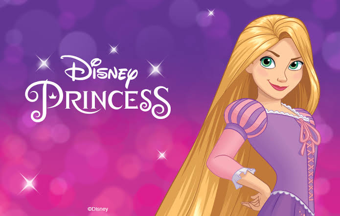

Rapunzel
Rapunzel é uma das mais famosas personagens dos contos de fadas,
eternizada pelos Irmãos Grimm no século XIX. Sua história, marcada
por longos cabelos dourados e uma torre isolada, é repleta de magia,
mistério e superação. Ao longo dos anos, o conto ganhou diversas
versões em livros, filmes e peças teatrais, encantando crianças e
adultos em todo o mundo. Mais do que uma simples princesa, Rapunzel
simboliza coragem, esperança e a busca pela liberdade, tornando-se
uma figura marcante no universo das histórias infantis.

A narrativa de Rapunzel começa quando uma jovem é raptada por uma
bruxa e mantida trancada em uma torre sem portas, tendo apenas uma
janela no alto. Seu cabelo, que crescia de forma extraordinária, se
tornava a única maneira de alguém alcançá-la. Ao longo da história,
elementos como o amor verdadeiro, a luta contra a opressão e a descoberta
de si mesma se destacam, mostrando que Rapunzel não é apenas uma moça
em perigo, mas também uma personagem que aprende a enfrentar seus medos
e a construir seu próprio destino.
Linha do Tempo
- 1790 “Persinette” – por Charlotte-Rose de Caumont de La Force
Primeira versão literária conhecida da história que inspirou "Rapunzel".
- 1812 “Rapunzel” – Irmãos Grimm
Versão mais famosa do conto, publicada no livro Kinder- und Hausmärchen
(Contos de Fadas para Crianças e para o Lar).
- 1983 Faerie Tale Theatre: Rapunzel
Série americana que adaptava contos de fadas com atores reais.
- 1990 Rapunzel (Golden Films)
Filme animado lançado diretamente em vídeo, baseado no conto dos Irmãos Grimm.
- 1996 Happily Ever After: Fairy Tales for Every Child – Rapunzel
Episódio da série animada que reimagina contos de fadas com diversidade cultural.
- 2002 Barbie como Rapunzel
Segunda animação da série Barbie. Mistura elementos do conto clássico com uma história original.
- 2010 Enrolados (Tangled) – Walt Disney Animation Studios
Adaptação moderna da Disney, com forte apelo musical, humor e romance.
- 2012 Enrolados para Sempre (Tangled Ever After)
Curta-metragem animado com o casamento de Rapunzel e Flynn.
- 2017–2020 Enrolados: A Série / Rapunzel’s Tangled Adventure
Série animada da Disney Channel que expande os eventos entre os filmes.